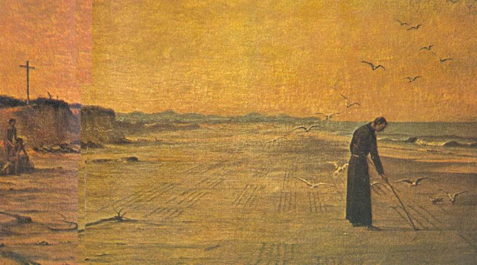

COMPAIXÃO E PRANTO
DA VIRGEM
NA MORTE DO FILHO

Poema a Virgem - Padre José de Anchieta
Escrito pelo Padre nas areias da Praia de Iperoig em Ubatuba.
Minha alma, por que tu te abandonas ao profundo sono?
Por que no pesado sono, tão fundo ressonas?
Não te move à aflição dessa Mãe toda em pranto,
Que a morte tão cruel do FILHO chora tanto?
E cujas entranhas sofre e se consome de dor,
Ao ver, ali presente, as chagas que ELE padece?
Em qualquer parte que olha, vê JESUS,
Apresentando aos teus olhos cheios de sangue.
Olha como está prostrado diante da Face do PAI,
Todo o suor de sangue do seu corpo se esvai.
Olha a multidão se comporta como ELE se ladrão fosse,
Pisam-NO e amarram as mãos presas ao pescoço.
Olha, diante de Anás, como um cruel soldado
O esbofeteia forte, com punho bem cerrado.
Vê como diante Caifás, em humildes meneios,
Aguenta mil opróbrios, socos e escarros feios.
Não afasta o rosto ao que bate, e do perverso
Que arranca Tua barba com golpes violento.
Olha com que chicote o carrasco sombrio
Dilacera do SENHOR a meiga carne a frio.
Olha como lhe rasgou a sagrada cabeça os espinhos,
E o sangue corre pela Face pura e bela.
Pois não vês que seu corpo, grosseiramente ferido
Mal susterá ao ombro o desumano peso?
Vê como os carrascos pregaram no lenho
As inocentes mãos atravessadas por cravos.
Olha como na Cruz o algoz cruel prega
Os inocentes pés o cravo atravessa.
Eis o SENHOR, grosseiramente dilacerado pendurado no tronco,
Pagando com Teu Divino Sangue o antigo crime! (Pecado
Original cometido pelos primeiros pais)
Vê: quão grande e funesta ferida transpassa o peito, aberto
Donde corre mistura de sangue e água.
Se o não sabes, a Mãe dolorosa reclama
Para si, as chagas que vê suportar o FILHO que ama.
Pois quanto sofreu aquele corpo inocente em reparação,
Tanto suporta o Coração compassivo da Mãe, em expiação.
Ergue-te, pois e, embora irritado com os injustos judeus
Procura o Coração da MÃE DE DEUS.
Um e outro deixaram sinais bem marcados
Do caminho claro e certo feito para todos nós.
ELE aos rastros tingiu com seu sangue tais sendas,
Ela o solo regou com lágrimas tremendas.
A boa Mãe procura, talvez chorando se consolar,
Se as vezes triste e piedosa as lágrimas se entregar.
Mas se tanta dor não admite consolação
É porque a cruel morte levou a vida de sua vida,
Ao menos chorarás lastimando a injúria,
Injúria, que causou a morte violenta.
Mas onde te levou Mãe, o tormento dessa dor?
Que região te guardou a prantear tal morte?
Acaso as montanhas ouvirão Teus lamentos?
Onde está a terra podre dos ossos humanos?
Acaso está nas trevas a árvore da Cruz,
Onde o Teu JESUS foi pregado por Amor?
Esta tristeza é a primeira punição da Mãe,
No lugar da alegria, segura uma dor cruel,
Enquanto a turba gozava de insensata ousadia,
Impedindo Aquele que foi destruído na Cruz.
Mãe, mas este precioso fruto de Teu ventre
Deu vida eterna a todos os fieis que O amam,
E prefere a magia do nascer à força da morte,
Ressurgindo, deixou a ti como penhor e herança.
Mas finda Tua vida, Teu Coração perseverou no amor,
Morreu JESUS traspassado com terríveis chagas
Foi para o Teu repouso com um amor muito forte!
O inimigo Te arrastou a esta cruz amarga,
Que pesou incomodo em Teu doce seio.
ELE, formoso espírito, glória e luz do mundo;
Quanta chaga sofreu e tantas LHE causaram dores;
Efetivamente, uma vida em vós era duas!
Todavia conserva o Amor em Teu Coração, e jamais
Evidentemente deixou de o hospedar no Coração,
Feito em pedaços pela morte cruel que suportou
Pois à lança rasgou o Teu Coração enrijecido.
O Teu Espírito piedoso e comovido quebrou na flagelação,
A coroa de espinhos ensanguentou o Teu Coração fiel.
Contra Ti conspirou os terríveis cravos sangrentos,
Tudo que é amargo e cruel o Teu FILHO suportou na Cruz.
Morto DEUS, então porque vives Tu a Tua vida?
Porque não foste arrastada em morte parecida?
E como é que, ao morrer, não levou o Teu espírito,
Se o Teu Coração sempre uniu os dois espíritos?
Admito, não pode tantas dores em Tua vida
Suportar, aguentando se não com um amor imenso;
Se não Te alentar a força do nascimento Divino
Deixará o Teu Coração sofrendo muito mais.
Vives ainda, Mãe, sofrendo muitos trabalhos,
Já te assalta no mar onda maior e cruel.
Mas cobre Tua Face Mãe, ocultando o piedoso olhar:
Eis que a lança em fúria ataca pelo espaço leve,
Rasga o sagrado peito ao teu FILHO já morto,
Tremendo a lança indiferente no Teu Coração.
Sem dúvida tão grande sofrimento foi à síntese,
Faltava acrescentá-lo a Tuas chagas!
Esta ferida cruel permaneceu com o suplício!
Tão penoso sofrimento este castigo guardava!
Com O querido FILHO pregado a Cruz Tu querias
Que também pregassem Teus pés e mãos virginais.
ELE tomou para SI a dura Cruz e os cravos,
E deu-Te a lança para guardar no Coração.
Agora podes, ó Mãe, descansar, que possui o desejado,
A dor mudou para o fundo do Teu Coração.
Este golpe deixou o Teu corpo frio e desligado,
Só Tu compassiva guarda a cruel chaga no peito.
Ó chaga sagrada feita pelo ferro da lança,
Que imensamente nos faz amar o Amor!
Ó rio, fonte que transborda do Paraíso,
Que intumesce com água fartamente a terra!
Ó caminho real com pedras preciosas, porta do Céu,
Torre de abrigo, lugar de refúgio da alma pura!
Ó rosa que exala o perfume da virtude Divina!
Jóia lapidada que no Céu o pobre um trono tem!
Doce ninho onde as puras pombas põem ovinhos,
E as castas rolas têm garantia de suster os filhotinhos!
Ó chaga, que és um adorno vermelho e esplendor,
Feres os piedosos peitos com divinal amor!
Ó doce chaga, que repara os corações feridos,
Abrindo larga estrada para o Coração de CRISTO.
Prova do novo amor que nos conduz a união!
(Amai uns aos outros como EU vos amo)
Porto do mar que
protege o barco de afundar!
Em TI todos se refugiam dos inimigos que ameaçam:
TU, SENHOR, és medicina presente a todo mal!
Quem se acabrunha em tristeza, em consolo se alegra:
A dor da tristeza coloca um fardo no coração!
Por Ti Mãe, o pecador está firme na esperança,
Caminhar para o Céu, lar da bem-aventurança!
Ó Morada de Paz! Canal de água sempre vivo,
Jorrando água para a vida eterna!
Esta ferida do peito, ó Mãe, é só Tua,
Somente Tu sofres com ela, só Tu a podes dar.
Dá-me acalentar neste peito aberto pela lança,
Para que possa viver no Coração do meu SENHOR!
Entrando no âmago amoroso da piedade Divina,
Este será meu repouso, a minha casa preferida.
No sangue jorrado redimi meus delitos,
E purifiquei com água a sujeira espiritual!
Embaixo deste teto
(Céu)
que é morada de todos,
Viver e morrer com prazer, este é o meu grande desejo.
Se deseja conhecer o texto original do poema escrito em latim pelo Padre Anchieta, clique no link a seguir: POEMA A VIRGEM.
=ORAÇÃO E NOVENA=
"SENHOR, nosso PAI, através do Beato Padre José de Anchieta, evangelizastes o nosso Brasil. Ele amou os pobres e sofredores, amenizando e curando seus males, e soube ser solidário com os índios, ajudando-os a VOS conhecer e amar em seu próprio idioma e costumes".
"Por esta razão, PAI querido, pela intercessão do Beato Padre José de Anchieta, que admiro e estimo, venho VOS suplicar a graça que necessito (faz aqui o seu pedido...), fortalecido pela mediação carinhosa e eficaz de NOSSA SENHORA, que ele também muito amou ao longo de sua existência. Amém".
PAI NOSSO + AVE MARIA + GLORIA + (um ato de piedade, amor ou misericórdia para um pobre necessitado ou doente)
Durante nove (9) dias seguidos.